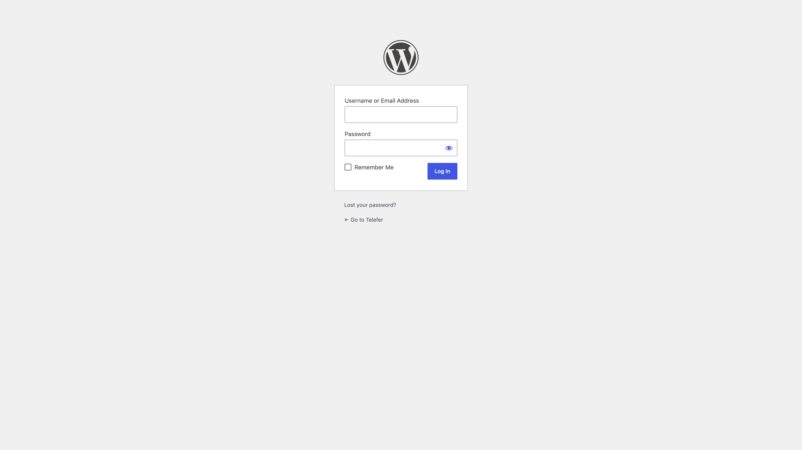
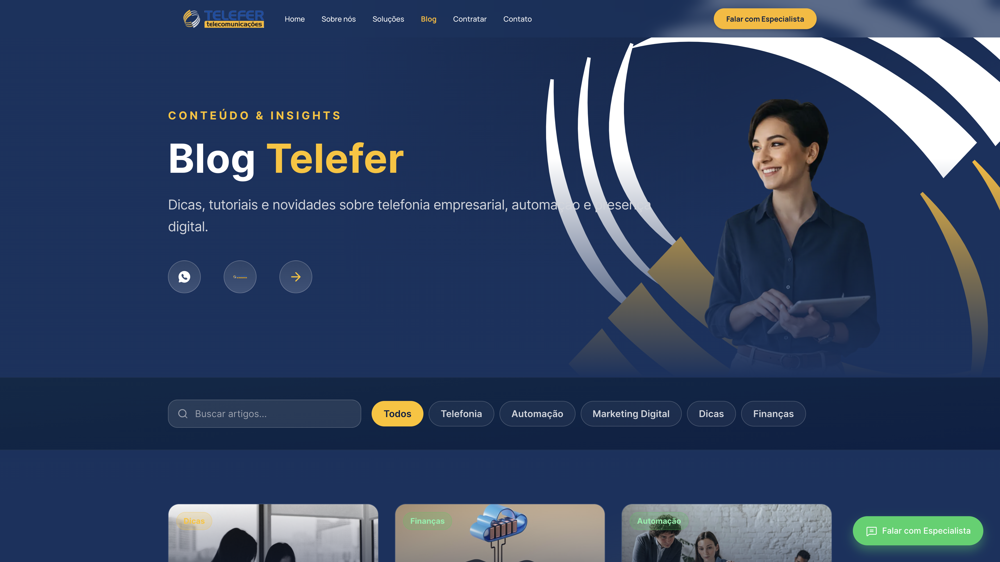

1. O que mudou
Antes, as páginas institucionais eram montadas no Elementor (arrastar blocos no painel).
Agora o site usa o tema Telefer: Home, Sobre nós, Soluções, Telefer Cloud, Telefer com IA, Presença digital e Contato são desenhadas no código do tema. O editor visual do Elementor não altera esses layouts.
O WordPress continua sendo o painel. O uso no dia a dia é:
- publicar e editar artigos do Blog;
- enviar arquivos na Biblioteca de Mídia;
- consultar Leads recebidos pelos formulários;
- pedir à V4 qualquer mudança de texto, imagem ou prazo nas páginas institucionais.
2. Quem edita o quê
| Item | Onde aparece | Como alterar |
|---|---|---|
| Artigo do blog (título, texto, foto, categoria) | /blog/ | Vocês no WordPress → Posts |
| Imagem para usar no blog ou enviar à V4 | Biblioteca de Mídia | Vocês no WordPress → Mídia |
| Home, Sobre, Soluções e landings | Menu do site | Pedido no grupo oficial da V4 |
| Fachada, prazos (“até 20 dias”), telefone, menu | Tema | Pedido no grupo oficial da V4 |
| Textos legais (política, mapa do site) | Rodapé | Pedido no grupo oficial da V4 |
A listagem principal do Blog ainda pode mostrar cards de exemplo do tema. Depois de publicar um artigo, avisem no grupo da V4 para confirmarmos se ele já aparece na grade de /blog/.
3. Como entrar no painel
- Abra https://telefer.com.br/wp-admin/.
- Informe usuário (ou e-mail) e senha.
- Clique em Log In.

Se não tiver login, peça acesso ao administrador do site (não compartilhem senha neste documento nem no grupo aberto).
4. Passo a passo: criar ou editar um artigo do Blog
O Blog no site usa título, resumo, categoria, data e imagem destacada:

4.1 Abrir a lista de posts
- No menu esquerdo, clique em Posts.
- Para artigo novo: Adicionar novo.
- Para alterar um existente: clique no título na lista.

4.2 Preencher o artigo

- Título — o mesmo que aparece no card e no topo do artigo.
- Conteúdo — texto completo. Evite colar do Word com formatação estranha; prefira texto limpo.
- Resumo (Excerpt) — 2 ou 3 linhas para o card. Se não preencher, o WordPress corta o início do texto.
- Categoria — marque só uma, entre: Telefonia, Automação, Marketing Digital, Dicas, Finanças.
- Imagem destacada — foto do card. JPG ou PNG, no mínimo 1200 × 800 pixels.
- Clique em Publicar (ou Atualizar, se já existir). Se quiser revisar antes, use Salvar rascunho e Visualizar.
Depois de publicar, enviem no grupo da V4 o título e o link do artigo para validarmos a listagem.
4.3 Editar um artigo já no ar
- Posts → Todos os posts.
- Abra o artigo.
- Altere o que for preciso.
- Clique em Atualizar.
5. Passo a passo: enviar uma imagem
- Menu Mídia → Adicionar novo arquivo.
- Arraste o arquivo ou clique em Selecionar arquivos.
- Espere o upload terminar.
- Clique no arquivo e copie o URL do arquivo se forem mandar a imagem para a V4 aplicar numa página institucional.
Para foto de artigo, o caminho mais simples é definir a imagem destacada direto no editor do post (passo 4.2).
6. Passo a passo: pedir alteração de página institucional
Use este modelo no grupo oficial da V4:
Página: (ex.: Sobre nós / Telefer Cloud / Home)
Onde: (ex.: seção Nossa Estrutura / Como funciona)
O que mudar: (texto atual → texto novo, ou “trocar a foto da fachada”)
Arquivo: (anexo ou link da Mídia)
Prazo desejado: (se houver)
Exemplos reais deste modelo de trabalho:
- Sobre nós → Nossa Estrutura → nova foto da fachada do prédio.
- Telefer Cloud → Como funciona → “Ativação em 48 horas” para “Ativação em até 20 dias após contratação”.
7. O que não mexer
Não usem o Elementor para “remontar” Home, Sobre ou Soluções — o tema ignora esse conteúdo.
Não apaguem páginas do menu Páginas (Home, Sobre, Soluções, Contato etc.).
Não instalem, atualizem ou desativem plugins sem alinhamento com a V4.
Não alterem Aparência → Editor de arquivos / temas.
Contato comercial no site
Telefone publicado: (19) 2102-5600. Qualquer mudança de telefone, WhatsApp ou e-mail institucional também vai pelo grupo da V4.